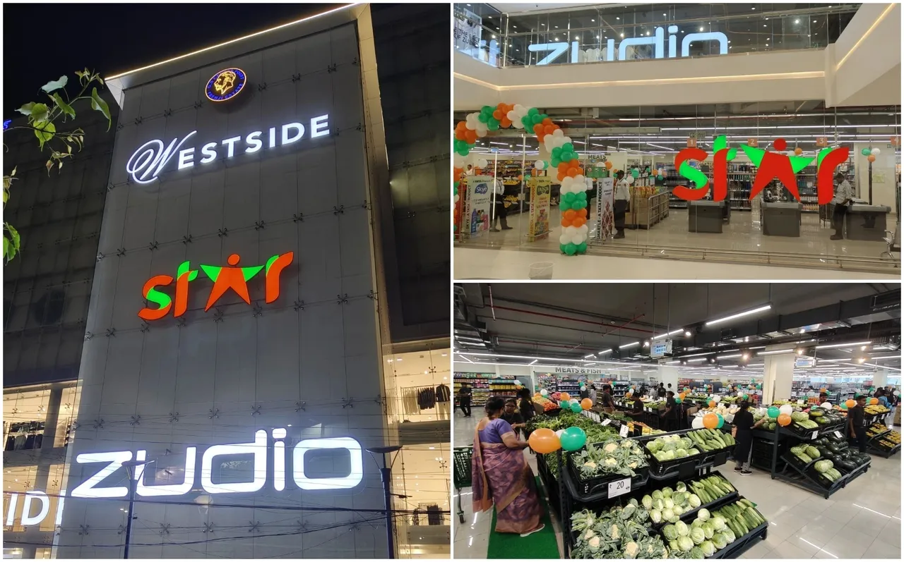
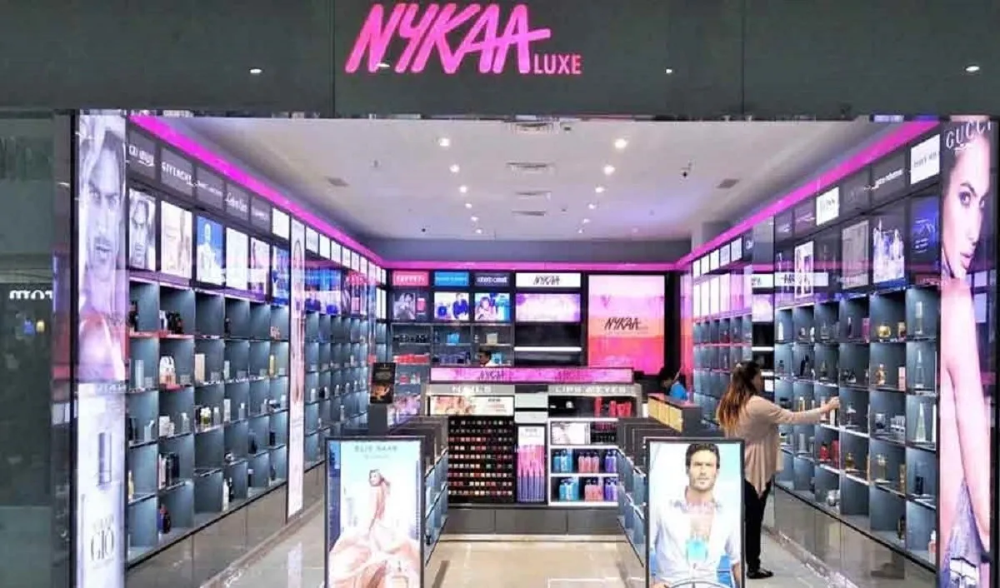

The narrative of retail evolution has traditionally been framed as a linear progression—a methodical transition from physical stores to e-commerce, with digital eventually supplanting brick-and-mortar as the dominant commercial paradigm. Yet across India's vibrant and multifaceted retail landscape, a more nuanced and revolutionary transformation unfolds: the emergence of "phygital" retail, where physical and digital realms converge to create integrated experiences transcending the limitations of either domain alone.
This phygital revolution represents not merely technological enhancement of existing retail models but a fundamental reconceptualisation of consumer engagement—one uniquely suited to India's distinctive marketplace. It emerges at the confluence of several formidable forces: the enduring cultural significance of physical retail experiences in Indian consumer behaviour; the explosive proliferation of smartphone adoption across demographic segments; the rapid evolution of digital payment infrastructure following demonetisation; and the strategic imperative for differentiation in an increasingly competitive retail environment.
The implications extend beyond operational metrics to encompass fundamental questions of competitive advantage, consumer relationship evolution, and the very future of retail in the world's fastest-growing major economy. As India's retail sector undergoes this profound metamorphosis, those enterprises capable of orchestrating seamless integration between physical and digital realms position themselves not merely for incremental improvement but for market leadership in a reconfigured competitive landscape.
India's Distinctive Retail Context: The Fertile Ground for Phygital Innovation
India's embrace of phygital retail occurs within a distinctive context that shapes both implementation approaches and outcomes. Several characteristics distinguish India's retail evolution from patterns observed elsewhere:
Retail Format Plurality
Unlike markets where organised retail achieved dominance before digital transformation began, India maintains extraordinary diversity in retail formats—from traditional kirana stores and street vendors to modern supermarkets, department stores, and e-commerce platforms. This plurality enables distinctive phygital approaches that leverage rather than supplant traditional retail infrastructure while introducing digital capabilities to previously unconnected commercial contexts.
Technology Leapfrogging
India's consumers frequently bypass intermediate technological stages to adopt cutting-edge capabilities directly. This leapfrogging phenomenon—most visible in the transition from no connectivity to smartphone-centric digital engagement without intervening phases of fixed-line internet adoption—creates distinctive opportunities for phygital innovation that bypass legacy constraints experienced in more sequentially developed markets.
Digital Payment Acceleration
The combined impact of demonetisation, Unified Payments Interface (UPI) development, and pandemic-accelerated contactless engagement has catalysed extraordinary evolution in payment behaviour. India has progressed from predominantly cash-based transactions to sophisticated digital payment adoption with remarkable velocity, creating foundational infrastructure for phygital retail experiences impossible in predominantly cash economies.
Trust-Experience Calibration
Indian consumers exhibit distinctive patterns in trust development and experiential expectations—often valuing personal relationships with merchants, seeking tangible product interaction before purchase, yet increasingly embracing digital convenience for appropriate categories and occasions. This calibration creates demand for retail models that harmonise relationship continuity and sensory engagement with digital efficiency.
These distinctive characteristics have fostered phygital implementation approaches that differ significantly from omnichannel evolution patterns in North America, Europe, or even other Asian markets. The case studies that follow illuminate these distinctive patterns—revealing how Indian retailers have developed phygital strategies addressing their specific context while achieving transformative outcomes.
Case Study: Reliance Retail's Ecosystem Integration
The transformation of Reliance Retail from traditional multi-format retailer to orchestrator of India's most ambitious phygital ecosystem exemplifies the revolutionary potential of contextually appropriate omnichannel integration. With operations spanning virtually every retail category—from grocery and electronics to fashion and jewellery—Reliance confronted the challenge of creating integrated experiences across an extraordinarily diverse portfolio while leveraging India's distinctive retail infrastructure.
Rather than replicating Western omnichannel models, Reliance developed a distinctive ecosystem approach that transcends conventional digital-physical integration to create new value configurations leveraging their scale, technological capabilities, and strategic partnerships:
JioMart-Kirana Integration
Rather than positioning digital commerce in opposition to traditional retail, Reliance's JioMart platform explicitly integrates neighbourhood kirana stores as fulfillment partners—digitising their inventory management, enabling online discovery by proximate consumers, and providing logistics support for last-mile delivery. This innovative model preserves the social infrastructure and employment of traditional retail while enhancing it with digital capabilities—allowing consumers to maintain trusted merchant relationships while gaining digital convenience.
The impact has been extraordinary: over 15 million kiranas onboarded to the platform, average participating kirana revenue increases of 30-40%, and consumer delivery times averaging less than two hours for essential categories. This approach has transformed potential competition between modern and traditional retail into symbiotic partnership—creating what might be termed "augmented kirana" operations that combine community embeddedness with technological sophistication.
WhatsApp Commerce Integration
Recognising that India's digital behaviour is predominantly messaging-centric rather than browser-centric, Reliance integrated JioMart ordering capabilities directly into WhatsApp—enabling consumers to browse catalogues, place orders, and manage accounts without leaving their preferred messaging environment. This integration acknowledges the distinctive patterns of India's digital engagement, where messaging platforms function as primary digital interfaces rather than merely communication channels.
The results have been compelling: conversion rates 70% higher than browser-based e-commerce, 45% reduction in cart abandonment, and 65% of transacting customers becoming repeat purchasers within 30 days. This messaging-centric approach represents phygital innovation specifically aligned with Indian digital behaviour patterns—creating seamless integration between conversational commerce and physical fulfillment.
Smart Store Transformation
For their direct retail operations, Reliance has implemented comprehensive "Smart Store" transformation across their diverse formats—integrating capabilities including digital discovery, augmented reality product visualization, endless aisle inventory expansion, single customer view across channels, and frictionless checkout. These capabilities transform physical stores from inventory-constrained spaces to experience centres with digitally expanded capabilities.
The impact includes 28% higher average transaction value for digitally engaged in-store customers, 47% increase in cross-category purchasing, and 35% improvement in inventory efficiency through distributed fulfillment capabilities. This transformation represents phygital innovation specifically designed for the Indian context—enhancing the high-touch engagement valued in Indian consumer culture with digital capabilities that expand convenience and choice.
MyJio Superapplication
Unifying these diverse phygital initiatives, Reliance has developed the MyJio superapplication integrating retail transactions across categories with additional services including telecommunications, entertainment, healthcare, and financial services. This integrated digital environment creates a comprehensive ecosystem while enabling consistent experience across physical and digital touchpoints.
This ecosystem approach has generated extraordinary metrics: 70% of digitally acquired customers becoming omnichannel shoppers, customer retention rates 3.8 times higher for omnichannel versus single-channel customers, and customer lifetime value 4.2 times higher for ecosystem-engaged versus traditional shoppers. The approach represents phygital innovation at ecosystem scale—creating integrated commerce experiences spanning categories, channels, and consumption occasions.
What distinguishes Reliance's approach is its explicit recognition that phygital integration in India cannot simply replicate Western or East Asian models but must address the distinctive characteristics of Indian retail infrastructure and consumer behaviour. Their experience demonstrates that effective phygital transformation in the Indian context often involves partnership with traditional retail rather than displacement, messaging-centric rather than browser-centric digital engagement, and ecosystem integration rather than channel-specific optimization.
Case Study: Tata Group's Neu Ecosystem

The Tata Group, India's largest conglomerate with operations spanning diverse retail categories, has approached the phygital revolution through a distinctive strategy focusing on loyalty-centred ecosystem development. Their approach illuminates patterns of omnichannel integration emphasising relationship coherence across physical and digital touchpoints rather than merely transactional convenience.
Tata's phygital journey has unfolded through several interconnected initiatives:
Tata Neu Superapp Development
At the core of Tata's phygital strategy is the Tata Neu superapp—an integrated digital environment unifying previously disparate Tata brands including Croma (electronics), Westside (fashion), Titan (watches and jewellery), BigBasket (grocery), 1mg (pharmacy), and Tata CLiQ (multi-category e-commerce). This unified interface enables consistent customer experience across brands while aggregating engagement, transaction, and preference data into a coherent customer view.
The platform has achieved remarkable metrics: 15 million active users within six months of launch, cross-brand purchasing by 47% of active customers, and loyalty point redemption across categories by 38% of users. This unified digital environment represents the foundation for Tata's broader phygital strategy—creating digital coherence across their diverse physical retail operations.
NeuPass Loyalty Integration
Extending beyond digital unification, Tata has implemented comprehensive loyalty integration through the NeuPass programme—enabling customers to earn and redeem points across physical stores, digital platforms, and service experiences throughout the Tata ecosystem. This loyalty integration creates tangible incentives for omnichannel engagement while generating rich behavioural data spanning physical and digital contexts.
The impact has been substantial: NeuPass members shop across 3.4 Tata brands on average (compared to 1.7 for non-members), exhibit 62% higher annual spending, and demonstrate 54% higher retention rates. This loyalty integration represents phygital innovation specifically aligned with Indian consumer behaviour—where relationship continuity and perceived value remain central to retail engagement.
Phygital Store Transformation
For their physical retail operations, Tata has implemented comprehensive phygital capabilities including store-specific inventory visibility in the Neu app, in-app navigation to desired products within physical stores, augmented reality product visualization, and seamless checkout through the Neu platform. These capabilities transform the relationship between digital engagement and physical store experiences—enabling digitally-enhanced discovery followed by physical product interaction and evaluation.
The results include 41% increased conversion rates for digitally-engaged store visitors, 28% higher average transaction values, and 53% greater likelihood of cross-category purchasing. This transformation represents phygital innovation specifically designed for Indian consumer preferences—where physical product evaluation remains important while digital capabilities enhance convenience and expand possibilities.
Data-Driven Experience Personalization
Unifying data across physical and digital touchpoints, Tata has developed sophisticated personalization capabilities spanning channels and brands. This unified intelligence enables contextually relevant recommendations, offers, and communications regardless of engagement channel—creating coherent customer experiences that adapt based on comprehensive rather than channel-specific behavioural understanding.
The impact includes 73% higher offer response rates for personalized versus generic communications, 42% increase in recommended product conversion, and 58% improvement in customer satisfaction metrics for personalized experiences. This data integration represents phygital innovation at ecosystem scale—creating intelligence spanning physical and digital contexts to enable relevant engagement across touchpoints.
What distinguishes Tata's approach is its explicit focus on relationship coherence and value perception across physical and digital contexts rather than merely transactional integration. Their experience demonstrates that effective phygital transformation in India often emphasises loyalty cultivation, cross-category engagement, and ecosystem value creation rather than simply channel-specific optimisation. The approach acknowledges the distinctive characteristics of Indian consumer behaviour—where value consciousness, relationship continuity, and status recognition significantly influence engagement patterns.
Case Study: Nykaa's Category Dominance Through Phygital Excellence
Nykaa's evolution from digital-native beauty retailer to omnichannel category leader demonstrates how phygital integration can create distinctive competitive advantage in specialized retail segments. Their journey illustrates how digital-first enterprises can strategically incorporate physical retail elements to address the specific requirements of Indian consumers while maintaining the efficiencies of digital-centric operations.
Nykaa's phygital strategy encompasses several distinctive elements:
Curated Physical Store Network
Rather than pursuing comprehensive physical coverage, Nykaa has developed a strategically located network of experiential stores in high-value markets—focusing on premium locations where physical product trial, expert consultation, and sensory engagement significantly influence purchase decisions. These stores function not merely as transaction points but as brand experience centres, education venues, and community hubs for beauty enthusiasts.
The impact of this curated approach includes physical stores influencing 28% of digital transactions within their geographic footprint, 64% of store visitors becoming omnichannel customers, and 2.7 times higher lifetime value for omnichannel versus digital-only customers. This selective physicality represents phygital innovation specifically aligned with Indian beauty retail patterns—where product trial and expert guidance remain significant influence factors despite growing digital comfort.
Beauty Advisor Digitization
Recognising the crucial role of beauty advisors in Indian cosmetics purchasing behaviour, Nykaa has implemented comprehensive beauty advisor digitization—enabling advisory relationships to extend beyond physical store visits through virtual consultations, personalized digital communications, and advisor-curated product recommendations. This approach preserves the high-touch advisory model valued in Indian beauty retail while extending it beyond the temporal and spatial constraints of physical interaction.
The results include 39% higher conversion rates for advisor-influenced digital transactions, 47% larger average basket sizes for customers engaged with beauty advisors across channels, and 58% greater repurchase frequency among advisor-connected customers. This relationship digitization represents phygital innovation specifically designed for Indian consumer preferences—where expert guidance significantly influences beauty purchasing decisions.
Unified Inventory Visibility
Nykaa has implemented comprehensive inventory integration across their supply chain—enabling customers to access the company's entire product range regardless of engagement channel, with fulfillment from the optimal inventory location whether central warehouse, dark store, or physical retail location. This integration transforms physical stores into fulfillment nodes within a unified supply network while ensuring consistent product accessibility across channels.
The impact includes 32% reduction in order fulfillment times, 24% decrease in split shipments, and 87% improvement in product availability perception among customers. This inventory integration represents phygital innovation specifically addressing Indian market conditions—where supply chain complexity and product authenticity concerns have historically created availability challenges in the beauty category.
Seamless Identity Integration
Across physical and digital touchpoints, Nykaa has implemented consistent identity recognition—enabling customers to access their purchase history, beauty profiles, loyalty status, and personalized recommendations regardless of engagement channel. This integration creates coherent experiences spanning digital discovery, in-store consultation, online replenishment, and mobile engagement.
The results include 64% of customers actively engaging across multiple channels, 73% higher retention rates for omnichannel versus single-channel customers, and 47% greater share of beauty spending among phygitally engaged customers. This identity integration represents phygital innovation at individual customer scale—creating coherent beauty journeys that transcend the physical-digital divide.
What distinguishes Nykaa's approach is its selective physicality focused specifically on elements where physical engagement creates distinctive value within beauty retail. Their experience demonstrates that effective phygital transformation can begin from digital foundations rather than physical legacy—with physical elements strategically incorporated to address specific aspects of customer value rather than comprehensively replicated. This approach has enabled Nykaa to achieve category leadership while maintaining the operational efficiencies of digital-centric operations.
Case Study: DMart's Pragmatic Phygital Evolution
DMart, one of India's most successful value retailers, presents a distinctive case study in phygital transformation focused on operational pragmatism rather than technological sophistication. Their approach illuminates how omnichannel integration can enhance value retail models serving price-sensitive consumer segments with minimal compromise to the operational efficiency that enables price leadership.
DMart's phygital journey has proceeded along several pragmatic dimensions:
DMart Ready Neighbourhood Fulfillment
Rather than attempting comprehensive last-mile delivery from centralised warehouses, DMart established a network of neighbourhood pickup points where customers can collect orders placed through the DMart Ready application. This approach preserves DMart's operational efficiency while introducing digital convenience—allowing customers to browse and purchase electronically while leveraging the efficiency of customer-executed final fulfillment.
The impact includes fulfillment costs 76% lower than home delivery models, 94% order pickup compliance, and 67% of DMart Ready customers becoming repeat purchasers within 90 days. This neighbourhood fulfillment approach represents phygital innovation specifically designed for value retail—introducing digital capabilities without compromising the operational efficiency that enables price competitiveness.
Store-Synchronized Digital Catalogue
Unlike retailers offering expanded digital assortments, DMart maintains strict synchronization between store and digital catalogues—ensuring that digital interfaces accurately reflect available store inventory without creating fulfillment complexity or customer disappointment. This approach preserves operational simplicity while introducing digital discovery convenience for value-conscious shoppers.
The results include 98% inventory accuracy between digital display and physical availability, 94% order fulfillment without substitutions, and 72% of digitally engaged customers reporting improved shopping efficiency. This catalogue synchronization represents phygital innovation specifically aligned with value retail requirements—enhancing convenience without introducing operational complexity that would compromise price competitiveness.
Value-Focused Digital Experience
DMart has developed a distinctively streamlined digital experience emphasizing price transparency, product comparison, and efficient transaction completion rather than content richness or experiential sophistication. This focused approach preserves DMart's value retail positioning while introducing digital convenience appropriately calibrated for price-sensitive consumer segments.
The impact includes average app-using customer spending 37% more annually than store-only customers, 47% higher shopping frequency among digitally engaged customers, and 28% greater retention among app users versus store-only shoppers. This value-focused digital approach represents phygital innovation specifically designed for DMart's customer segments—introducing digital convenience without compromising the value orientation central to the brand's positioning.
Store Associate Digitization
Rather than implementing separate digital operations, DMart has digitally equipped store associates to fulfill online orders during non-peak hours—creating operational synergies between physical and digital channels while maintaining workforce productivity. This approach enables digital commerce capabilities without duplicating operational infrastructure or compromising staff utilization.
The results include digital fulfillment costs 47% lower than dedicated e-commerce operations, 92% digital order accuracy, and inventory efficiency 28% higher than comparable retailers operating separate e-commerce infrastructure. This associate digitization represents phygital innovation specifically aligned with value retail economics—enabling digital capabilities without creating parallel operational structures that would compromise cost competitiveness.
What distinguishes DMart's approach is its unwavering focus on operational pragmatism and value preservation throughout their phygital evolution. Their experience demonstrates that effective omnichannel integration need not involve technological sophistication or experiential richness but can focus specifically on enhancing convenience while preserving the operational efficiency that enables price competitiveness. This approach has particular relevance for value retailers serving price-sensitive customer segments across India's diverse socioeconomic spectrum.
Patterns of Successful Phygital Implementation in India
The case studies examined reveal several distinctive patterns characterising successful phygital implementation in India's retail sector—patterns that differ in important respects from omnichannel approaches observed in other retail contexts:
Ecosystem Integration Rather Than Channel Unification
Successful implementations frequently transcend conventional channel integration to create comprehensive ecosystems spanning categories, services, and consumption occasions. This ecosystem approach acknowledges the distinctive characteristics of Indian consumer behaviour—where relationship continuity, brand trust, and perceived status value significantly influence engagement patterns. It enables retailers to create value propositions spanning physical and digital contexts while cultivating comprehensive rather than transactional customer relationships.
Messaging-Centric Rather Than Browser-Centric Digital Engagement
Reflecting India's distinctive digital adoption patterns, successful implementations frequently leverage messaging platforms as primary engagement environments rather than conventional websites or standalone applications. This messaging-centricity acknowledges that for many Indian consumers, platforms like WhatsApp function as primary digital interfaces rather than merely communication channels. It enables retailers to engage consumers within their established digital environments rather than requiring adaptation to retail-specific interfaces.
Traditional Retail Augmentation Rather Than Displacement
Rather than positioning digital commerce in opposition to traditional retail infrastructure, successful implementations frequently augment traditional formats with digital capabilities—whether through assisted e-commerce in neighbourhood stores, digital inventory visibility for traditional merchants, or distributed fulfillment leveraging existing retail networks. This augmentation approach acknowledges the enduring significance and employment implications of traditional retail in the Indian context while enhancing its capabilities through digital integration.
Selective Physicality Based on Category Requirements
Successful implementations calibrate physical engagement specifically to category requirements rather than pursuing comprehensive physical coverage. This selective approach acknowledges that the importance of physical interaction varies significantly across retail categories—from high-touch categories like beauty and jewellery where sensory evaluation significantly influences purchase decisions, to standardised replenishment categories where physical interaction adds minimal value beyond convenience. It enables optimised investment in physical infrastructure based on specific category value drivers.
Value-Calibrated Experience Design
Successful implementations carefully calibrate experiential sophistication to customer value orientation rather than pursuing undifferentiated premium experiences. This calibration acknowledges the extraordinary diversity of India's consumer landscape—spanning luxury shoppers seeking experiential richness to value shoppers prioritising price competitiveness and efficiency. It enables phygital integration appropriately aligned with specific customer segment priorities rather than imposing unnecessary experiential costs on value-oriented propositions.
These distinctive implementation patterns suggest that India is not merely adopting global omnichannel models but adapting phygital integration to its specific retail context—creating implementation approaches potentially more relevant to diverse and emerging retail landscapes than models developed in more homogeneous and sequentially evolved markets. This adaptive innovation may ultimately prove as significant as the technological implementation itself, potentially establishing India as a source of phygital integration knowledge for other diverse and rapidly evolving retail environments.
Strategic Implications for India's Retail Future
The strategic implications of India's phygital revolution extend beyond individual enterprise performance to encompass broader retail ecosystem evolution, social infrastructure development, and economic inclusion objectives:
Retail Landscape Reconfiguration
The phygital revolution is fundamentally reconfiguring India's retail competitive landscape—with traditional format distinctions between e-commerce, modern trade, and traditional retail increasingly supplanted by ecosystem-based competition spanning physical and digital realms. This reconfiguration creates strategic challenges for format-specific retailers while enabling integrated ecosystem players to cultivate comprehensive customer relationships across contexts and categories.
Employment Evolution Rather Than Displacement
Unlike retail transformations that simply displace traditional employment with digital automation, India's distinctive phygital approaches frequently preserve and enhance traditional retail roles through digital augmentation—whether through digitally-equipped kirana operators, technology-enhanced store associates, or virtual product advisors maintaining personalized customer relationships across channels. This evolution supports employment continuity while enhancing productivity and value creation—addressing the dual imperatives of retail modernisation and livelihood preservation.
Inclusion Enhancement Through Digital-Physical Integration
The integration of digital capabilities with physical retail infrastructure creates significant opportunities for enhanced economic inclusion—enabling consumers across the socioeconomic spectrum to benefit from retail modernisation regardless of digital literacy, connectivity limitations, or financial service access. This inclusion enhancement supports broader economic development objectives while expanding addressable markets for retail ecosystems and brands.
Data Advantage Consolidation
Perhaps most significantly, successful phygital integration creates extraordinary data advantages through comprehensive visibility across physical and digital engagement—enabling understanding of consumer behaviour spanning store visits, digital browsing, social interaction, and transaction patterns. This integrated intelligence enables ecosystem orchestrators to develop increasingly precise targeting, personalisation, and value propositions while accelerating the data disadvantage of single-channel or limited-ecosystem competitors.
These strategic implications suggest that India's phygital revolution represents not merely technological enhancement but fundamental restructuring of retail value creation and competitive advantage. The patterns established now may shape India's retail trajectory for decades to come, with implications extending far beyond individual enterprise performance to encompass broader economic development, employment patterns, and consumption evolution.
The Path Forward: Accelerating India's Phygital Revolution
While the case studies examined demonstrate significant progress in phygital implementation, broader acceleration of India's retail transformation requires systematic attention to several critical enablers:
Digital Infrastructure Enhancement
Despite remarkable progress, digital infrastructure limitations—including connectivity consistency, bandwidth constraints, and power supply reliability—continue to impede phygital engagement in many geographic areas. Accelerating infrastructure development, particularly in Tier 3+ cities and rural areas, would enable broader participation in the phygital revolution beyond metropolitan centres.
Digital Literacy Development
Effective phygital engagement requires baseline digital literacy currently unevenly distributed across India's diverse population. Systematic digital literacy initiatives—whether through formal education systems, retail-led training programmes, or public-private partnerships—would enhance consumer capability to engage with phygital experiences while expanding addressable markets for digitally integrated retailers.
Logistics Infrastructure Evolution
The physical dimension of phygital retail requires sophisticated logistics infrastructure to enable efficient fulfillment across India's complex geographic and regulatory landscape. Continued evolution of this infrastructure—spanning transportation networks, fulfillment centres, and last-mile delivery capabilities—would enhance phygital execution quality while expanding geographical coverage beyond current concentration areas.
Trust Infrastructure Development
Phygital engagement requires sophisticated trust infrastructure encompassing secure digital identification, reliable payment systems, effective consumer protection, and transparent data governance. Continued development of this infrastructure would enhance consumer confidence in phygital engagement while enabling increasingly sophisticated integration of physical and digital retail experiences.
Regulatory Framework Adaptation
Effective phygital integration requires regulatory frameworks that acknowledge the increasingly artificial distinction between physical and digital commerce. Continued adaptation of these frameworks—spanning licensing requirements, operational regulations, taxation structures, and consumer protection provisions—would create an enabling environment for integrated physical-digital retail models.
Attention to these enablers would support broader diffusion of phygital capabilities across India's diverse retail landscape—extending benefits beyond major retail ecosystems to encompass the small and medium retailers that constitute the backbone of India's retail infrastructure. This broader diffusion would enhance the macroeconomic and social impact of the phygital revolution while creating a more resilient and competitive retail sector.
India's Distinctive Path to Retail Excellence
The transformation unfolding across India's retail landscape represents not merely technological adoption but fundamental reimagining of retail engagement within the Indian context. The distinctive approaches to phygital implementation observed in pioneering Indian retailers—ecosystem integration rather than channel unification, messaging-centric rather than browser-centric, augmentation rather than displacement, selective physicality, value-calibrated experience design—constitute innovation in implementation as significant as the technological innovation itself.
These distinctive approaches enable Indian retailers to harness phygital capabilities while addressing the specific challenges and opportunities of the Indian retail context. They demonstrate that effective omnichannel transformation need not follow paths established in more homogeneous and sequentially evolved retail markets but can chart alternative routes more appropriate to diverse and rapidly evolving retail landscapes.
As this phygital revolution accelerates, its implications extend beyond operational metrics to encompass competitive landscape reconfiguration, employment evolution, inclusion enhancement, and data advantage consolidation. The approaches pioneered by Indian retailers potentially establish an alternative model for retail transformation in diverse markets—one that integrates physical and digital capabilities to enhance rather than disrupt existing retail infrastructure while expanding convenience, choice, and accessibility across socioeconomic segments.
In this sense, India's phygital revolution represents not merely adoption of global best practices but creation of new best practices potentially more relevant to diverse and rapidly evolving retail landscapes than models developed in more homogeneous markets. This creative adaptation may ultimately constitute India's most significant contribution to global retail evolution—establishing approaches to omnichannel integration that balance technological sophistication with contextual appropriateness, experiential richness with value orientation, and modernisation with inclusion.
The phygital revolution underway thus represents not merely India's adaptation to omnichannel retail but potentially omnichannel retail's adaptation to India—creating integration approaches and business models that reflect India's distinctive retail context, consumer behaviour patterns, and socioeconomic diversity. It is in this synthesis of global technological capability with local implementation wisdom that the most profound opportunities of India's phygital revolution may ultimately reside.